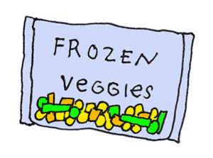
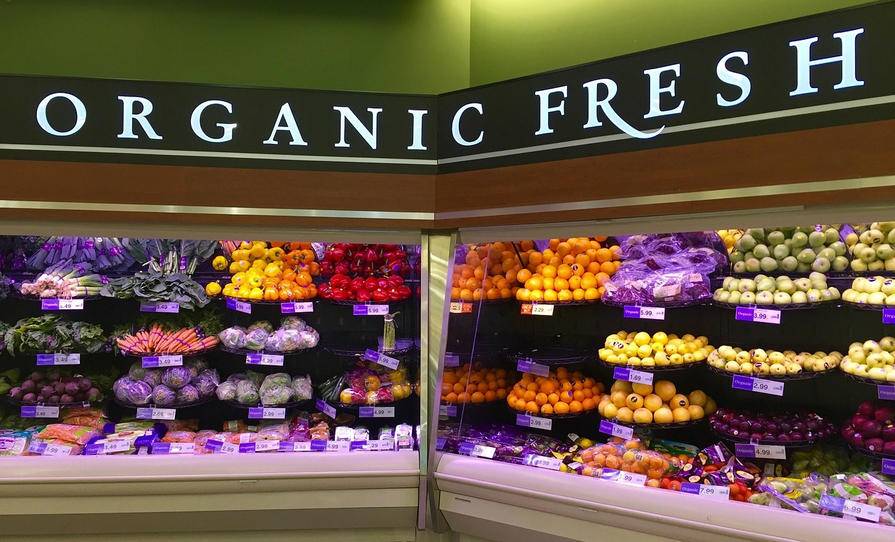
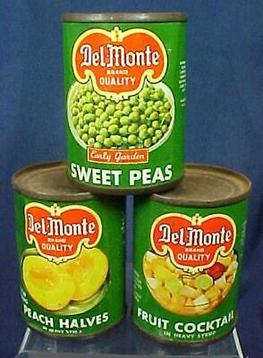

Monetary Advice
One of the most prohibitive aspects of getting fruit and vegetables is price and accessibility. Food deserts - areas where there are little to no local sellers of healthy foods nearby - are commonplace in America and most urban and suburban areas. Areas that do usually price fresh fruits and vegetables to the point where eating a consistent amount of them for daily nutrition breaks the bank and means sacrificing spending on something else. Thankfully, there is no need to buy fresh fruit and vegetables to feed your body and no need to break the bank for them! Below we have a few recommendations on how to save money while eating the daily recommended amount

Frozen Fruits and Vegetables
Whether cooked or uncooked, frozen fruits and vegetables can be found everywhere! In most recipes of fruits and vegetables, frozen fruits and vegetables are both easily found almost everywhere (even some gas stations carry them!) but are also usually half the price compared to fresh fruits and vegetables!

Buy Them Seasonally or on Sale!
Fruits and vegetables often have periods of time when they are harvested and then put onto the market to be sold. When this happens, produce such as fruits and vegetables are often called on season are are usually sold cheaper than average because there’s so much available.
Near the end of the season (or other times), they usually are about to go bad, so sellers often sell them for cheap. Freeze these up to use in a smoothie or in daily cooking! As a bonus, they never go bad once frozen!

Look at Canned Options
While canned food, especially canned produce (think canned peaches, peas, tomatoes, and whatnot) often are frowned upon in satisfying nutritional requirements, due to the addition of either sugar or salt (seen as “sodium” on nutritional tables), there is no denying that they are much cheaper and long lasting than their fresh counterparts, often lasting months. Plus, they’re often used in recipes such as stews and pies, making them a daily-used item. Cracking open a can of peaches to eat as a dessert (even ones with added sugar) is often a healthier alternative than other desserts people like to eat as a snack or after dinner.